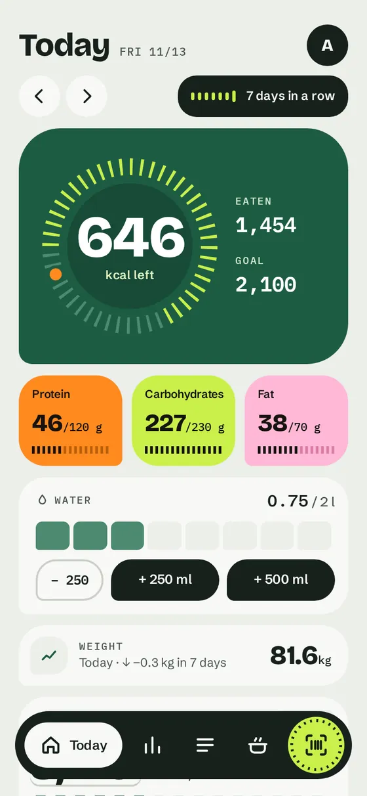
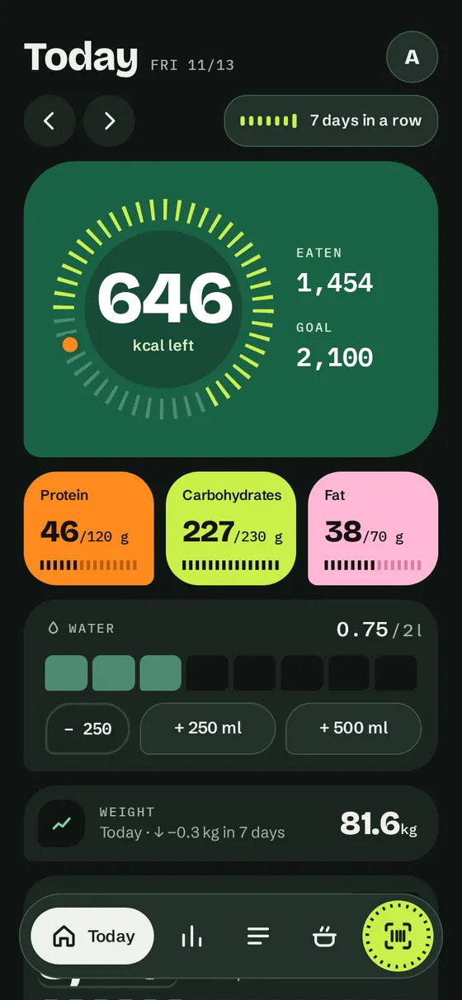
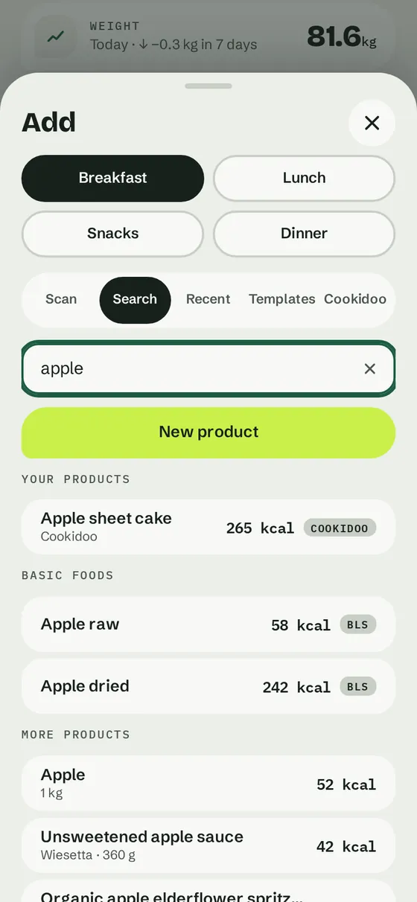
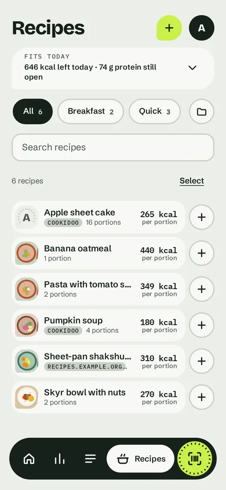
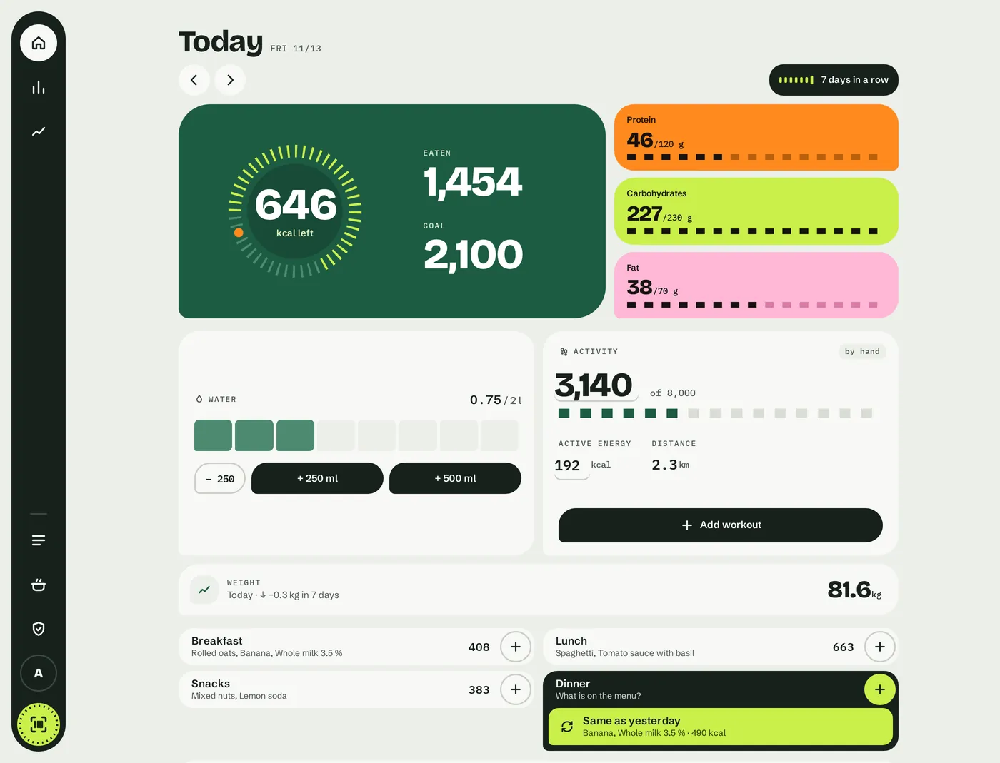
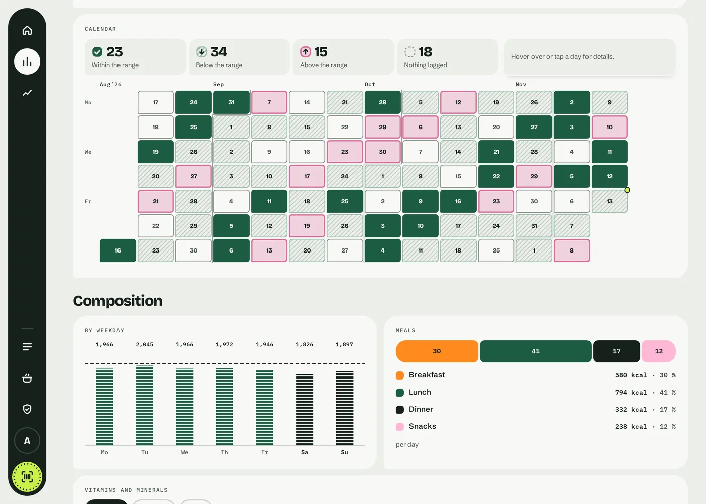
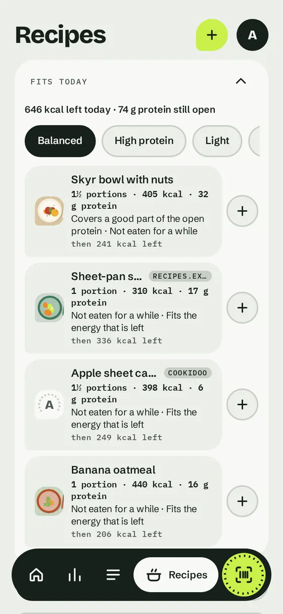
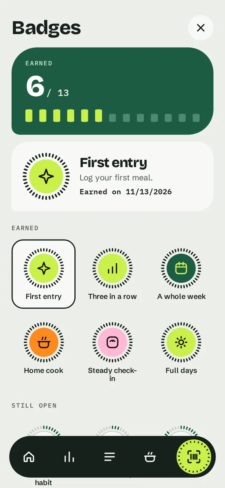
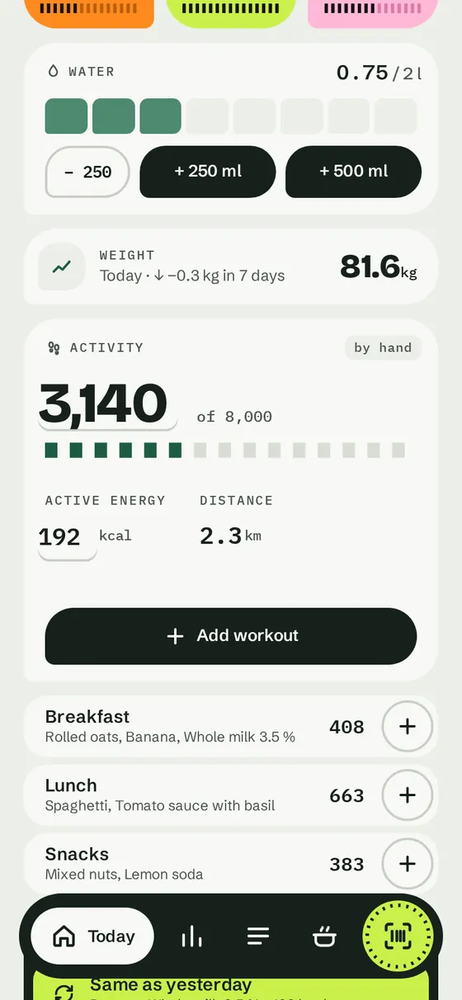

Day view
Calories left, protein, carbohydrates and fat against your goal, four meals, a seven-day streak. Going over a goal is shown, never scolded.
Log meals in seconds. Keep your data on your own server.
Young project · version 0.x · AGPL-3.0
The interface
German and English. The screenshots show the English interface with invented demo data.









Rather click than look? The demo runs the real interface in your browser, with made-up data. Nothing is saved and nothing is sent anywhere.
What it does
Calories left, protein, carbohydrates and fat against your goal, four meals, a seven-day streak. Going over a goal is shown, never scolded.
Scan with the phone camera in the browser, no app store. The amount is pre-filled with the serving or your last amount. Or search, or pick from what you ate recently.
Product missing or wrong? Photograph the nutrition table. The server reads it with local OCR on the CPU, nothing leaves your machine, and you confirm before saving.
Find packaged products by name, offline and instantly, from an optional local catalogue built from the Open Food Facts export, plus basic foods from the BLS, which you import yourself.
Up to ten years in days, weeks or months, comparison with the period before, nutrient curves you can lay side by side, a calendar heat map, a foods table and a rough estimate of your real energy expenditure. Numbers, not advice.
Steps, active energy and workouts by hand, from the Yazio export or from Apple Health via a Shortcut. Optionally added to the calorie goal.
Combine ingredients into your own recipe with portions, add a photo, sort recipes into groups and filter by them. Copy yesterday’s meal with one tap, save meals you eat often as templates.
Optional and off by default: take over recipes from Cookidoo (meal plan, collections or a link) or from any recipe page that publishes its nutrition values, with the values per portion.
Recipes that suit the rest of your day, from your goal, what you ate and when you last ate each recipe, with an amount and a reason in words. Worked out on your server; it can be switched off.
Badges for habits, a calm weekly review with one strength and at most one idea. It never rewards eating less or losing weight, and each person can switch it off.
A glass-stroke scale with quick buttons for water. An optional fasting timer, off by default and never rewarded.
Personal access keys for scripts and Shortcuts, and signed webhooks to addresses you register. Both are per person; an admin can switch them off.
Privacy
The diary lives in a SQLite database on your own machine. The interface loads no CDN, no fonts and no scripts from third parties. Label photos are read locally. This is all that ever leaves your server:
Your own recipe photos and “What still fits today” send nothing anywhere. The full list is in the README under What leaves your server.
Quick start
# clone, then:
git clone https://github.com/mbrockeu/mahlwerk.git && cd mahlwerk
cp .env.example .env # set MAHLWERK_CONTACT to your own address
docker compose up -dThen open http://localhost:8110 and create the first admin account on the setup page. The database lives in the volume mahlwerk-data. The optional label reader and Cookidoo connector are build options, see the README.
Reaching it from other devices. The Compose file starts Mahlwerk with its own accounts and publishes the port on 127.0.0.1 only. Put a reverse proxy with HTTPS in front instead of opening the port.
Sign-in
single for a private network, proxy behind your own login proxy, local with built-in accounts (passwords stored as scrypt), or oidc with OpenID Connect (Authelia, Keycloak, Authentik, Pocket ID, …). With several users, everyone sees only their own diary, goals and weight; the product list is shared.
Honest status
The code is written with Claude (Anthropic). Design decisions, review and responsibility lie with the maintainer.